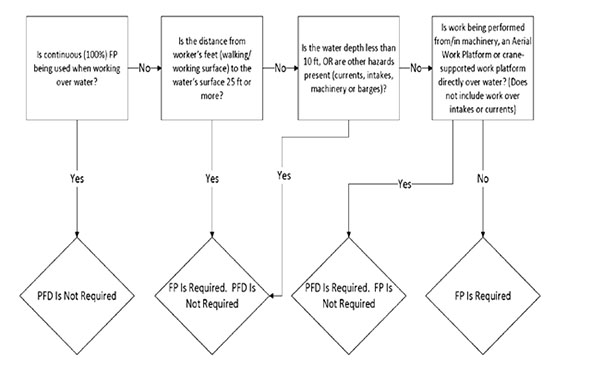

21.O Working Over or Near Water
21.O–21.O.06
21.O Working Over or Near Water (piers, wharves, quay walls, barges, aerial lifts, crane-supported work platforms, etc). PFDs are required for all work over or near water unless detailed below. > See Figure 21-7.
▸Note 1: All USACE and contractor workers, to include divers, shall comply with the requirements below.
▸Note 2: If utilizing PFDs with full body harness, the full body harness shall be worn under the PFD. The type of PFD used shall not interfere with proper use of a full body harness and lanyard.
21.O.01 When continuous fall protection is used, without exception, to prevent workers from falling into the water, the employer has effectively removed the drowning hazard and PFDs are not required.
▸Note: When using safety nets as fall protection, USCG-approved PFDs are usually required, unless rationale is provided in AHA.
21.O.02 When working over or near water and the distance from walking/working surface to the water's surface is 25 ft (7.6 m) or more, workers shall be protected from falling by the use of a fall protection system and PFDs are not required.
21.O.03 When working over or near water where the distance from the walking/working surface to the water's surface is less than 25 ft (7.6 m) AND the water depth is less than 10 ft (3.05 m), fall protection shall be required and PFDs are not required.
21.O.04 When working over water, PFD, lifesaving equipment and safety skiffs meeting the requirements of this EM shall be used as required.
21.O.05 When working from/in machinery (mechanically operated equipment), aerial lift equipment or other movable work platforms/cranes directly over water AND the depth of the water is at least 10 ft (3 m) deep, fall protection is not required however, PFDs are required.
21.O.06 When there are hazards from currents, intakes, dangerous machinery or equipment, or barges, etc., fall protection shall be required regardless of the fall distance and PFDs are not required.
FIGURE 21-7
Fall Protection (FP) vs. Personal Flotation Device (PFD) Use When Working Over or Near Water

{kind=link}